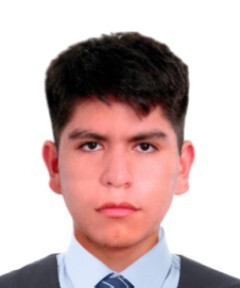

Estudiante de Ciencia de la Computación
Universidad Católica San Pablo
Mi nombre es Fabricio Facundo Heli Motta Aranzamendi y soy estudiante de Ciencia de la Computación en la Universidad Católica San Pablo. Me interesan la programación, la inteligencia artificial, los algoritmos, el desarrollo web y la creación de soluciones tecnológicas. Disfruto aprender nuevas herramientas informáticas y fortalecer mis conocimientos en computación. Además, tengo experiencia musical como saxofonista tenor. Como parte de mi trayectoria musical, obtuve el segundo puesto en un concurso regional de ensamble musical, experiencia que fortaleció mis habilidades de disciplina, trabajo en equipo y compromiso. Busco desarrollar conocimientos y habilidades que me permitan contribuir a proyectos tecnológicos innovadores.